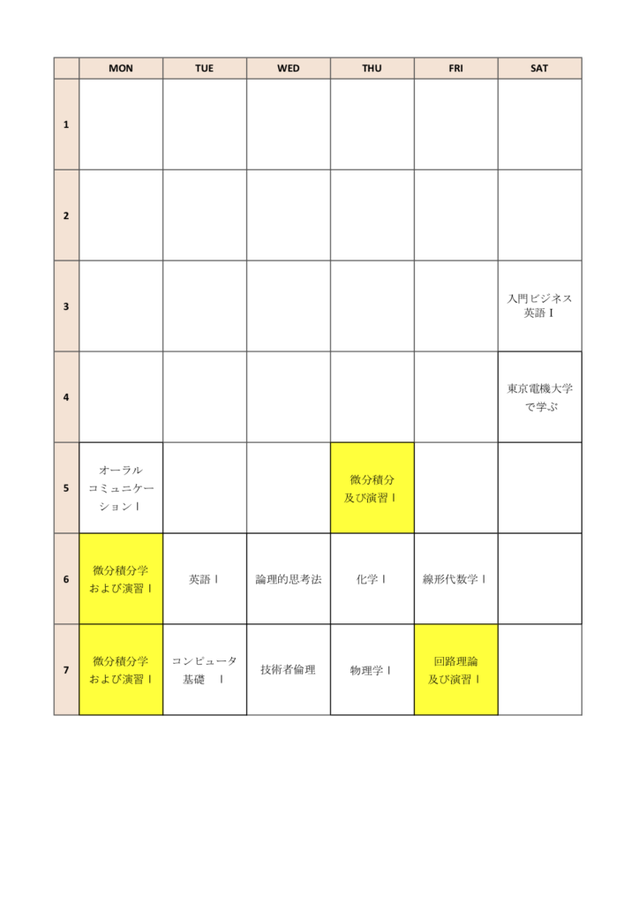

みなさんこんにちは！二部財務の藤田と申します。
二部広報局長に引き続き、一人暮らし絶賛奮闘中の二部財務の一日をお送りします！是非参考にしてみてください！
自己紹介
【役職】 第九回二部財務
【性別】 女
【所属学科】工学部第二部電気電子工学科３年
【その他の所属団体】 バドミントンサークル、二部FLAME部
【趣味・特技】 旅行料理、映画、メイク、カラオケ（90点以上を安定して叩き出す）
【一言】
大学には女子が本当に少ないです。私の学科は私含め２人しかおりません。電大女子は積極的にサークル、部活動に入って学科外の友達をつくるのをおすすめします。あわよくば先輩から過去問をゲットできるかもしれません…
タイムスケジュール
【 5 : 00 】 起床
私の朝は早いです。バイト先が7:00から営業なのでこの時間に起きています。高校時代は母親に怒鳴られてやっと起きるほどの朝に弱いタイプでした。この時間に起きられるようになったのも2年間の慣れかと思われます。ささっとメイクを終わらせてお店に向かいます♪
【 6 : 30 】 バイト
今は家から徒歩10分のバーガーショップで勤務しております。1月から働き出したためまだ新人状態です…最近はテイクアウトとウーバーイーツの注文が多くなりめちゃくちゃ忙しくなりました。
大学1～2年生のときは某夢の国で勤務しておりました。この頃は勤務先まで1時間弱かかったので、4:00には起きて始発で向かっていました。今では良い思い出です。夢の国の仕事はとにかく忙しくて、 3時間程別のエリアのヘルプに行った際は、レジから抜けられなくなりトイレに行けない事件になったこともありました。（事なきを得た。） 写真は 年越しイベントで夜通し勤務したときのものです。寒すぎて４つぐらいカイロを常備していました。日付が変わった瞬間花火を見ることができたとき、この仕事をしていてよかったなと思いました。
【 15 : 00 】 学校到着
大学に到着したら課題とレポートを終わらせています。レポートが手書きなので計画を立てて毎日少しずつ終わらせていました！
…というのは嘘で、計画を建てるのは好きなのですがその後は進んでないです。なんだかんだで切羽詰まって終わらせていました。3年時はこうならないように是非精進していきたいものです。大学では高校と違い誰も怒ってくれず、どんどん単位を落としていく人を見かけます。気をつけていきましょう。
【 18 : 10 】 授業開始
基本2号館で授業を受けています。よくつるんでいた友達がしっかりと授業に出る方々だったのでつられて授業に出ています。授業の感じは高校よりスピード早くなったかなーという程度です。真面目に受けてればさほど問題ないかと思われます(授業によるが)。小テストが頻繁にある授業もあるので、甘く見ずきちんと取り組んでいたほうがテストのときに楽できます。 あとめちゃくちゃ黒板消しが大きいです。
【 21 : 20 】 授業終了
授業後は仲の良い先輩方とダラダラ喋りつつ居酒屋に連れて行ってもらったり、家でご飯を作ったりしています。
【 22 : 30 】 帰宅
お風呂、夕飯の支度を済ませて課題を進めています。
鉄フライパンで作ったチャーハンです。無印で購入しました。重いけど良い仕事してくれます。
楽なので自ずと卵料理が多くなります。この前はTHE母親の味・肉じゃがを作りました。彼氏に味薄いねと伝えられたので母になるにはまだまだです。
【 25 : 00 】 就寝
一日の最後に家計簿の整理をしています。次の日いくら使えるかを記載してから寝るようにしています。もともとあったら使う散財タイプの人間なのでお金の減りがだいぶ減りました。ラインペイを使い始めてから家計簿が自動で更新されるので、やり取りの時間も減りました。委員会内のお金のやり取りも現金、ラインペイ、ペイペイで受け付けております。 そしてなんだかんだダラダラしてこの時間になります。急に次の日になってます。はやいです。時間は大切にしていきたいです。
【番外編】私の１年前期の時間割
ここで私が１年生の時に履修した科目についてご紹介したいと思います。
新入生のみなさんは是非参考にしてみてくださいね。（※工学部第二部電気電子工学科の場合）

※ 黄色は必修科目です。
最後に
今年の１年生はコロナウイルスの影響で不安な毎日を過ごしているかと思われます。バイト先の1年生も大学生になった実感が沸かないと嘆いていました。是非今のうちにたくさん先輩に頼ってほしいです。
是非グーグルフォームからも質問等も随時募集しております。
→https://forms.gle/x5JUqdPwuAyHMi9M6
また安心して大学に行けるようになり、私のことを見かけたら是非声をかけてくれると嬉しいです。
この記事が不安を抱えた一年生に参考になれば幸いです。